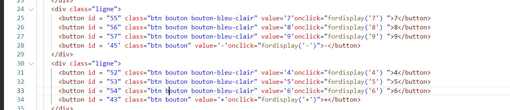

Calculator
Rapport
Nous avons creer un fichier JavaScript «script.js» que nous avons lié à notre fichier HTML «calculatot.html».
Puis, nous avons fait notre première fonction, qui efface tout désordre sur l'écran de sortie, qui entre en jeu lorsque
le bouton «AC» est déclenché.
Nous avons appelé notre fonction " forclear ()".
Le concept derrière le fonctionnement de cette fonction est qu'elle doit obtenir la valeur de l'écran de sortie et la définir par défaut (c'est-à-dire 0).
Partie JS

Partie HTML

Nous devons maintenant définir une fonction qui supprime le 0 par défaut sur l'écran de sortie,
sinon toute valeur mise à jour sur l'écran de sortie sera concaténée avec 0.
Ainsi, nous définissons une nouvelle fonction «removeZero ()», qui remplace le 0 par juste un espace si 0 est présent avant le début de toute opération.

Nous avons definie une fonction perc (), qui récupère la valeur de l'écran de sortie, la divise par 100 puis la renvoie.
Partie JS
Partie HTML

Nous avons mis à jour la valeur sur l'écran de sortie lorsqu'un bouton est cliqué et résoudre l'équation sur
l'écran de sortie une fois que le bouton «=» est cliqué.
Pour cela, nous définissons une nouvelle fonction d' affichage (valeur) , où valeur est le paramètre qui n'est
autre que les valeurs numériques ou les opérateurs arithmétiques.
Voyons le code:
Partie JS

Partie HTML

Nous devons afficher la sortie une fois que le bouton «=» est déclenché.
Pour cela, nous définissons une fonction résoudre () pour cela.
Mais la question est de savoir comment nous allons résoudre l'équation?
Grâce à JavaSript, nous avons une fonction eval (équation) qui évalue /
exécute l'équation passée en paramètre. Nous utiliserons ce concept ici.
Partie JS
 Partie HTML
Partie HTML
Nous avons aussi fait de meme pour sin cos et tan en creant les fonction (tan, cos, sin, racine)
Partie JS Partie HTML
Partie HTML